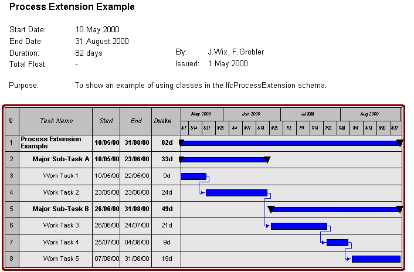
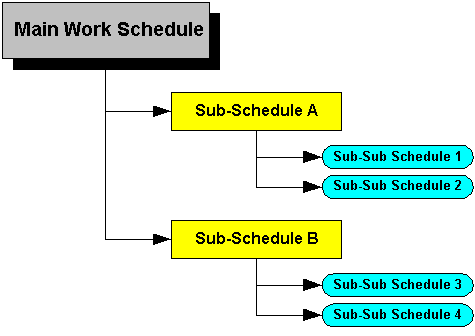

A work plan provides an overall container for all the work schedules and the resources identified as being brequired to carry out the work tasks.
The Work Schedule is used to represent information that is contained with any schedule (or programme) of work. At the highest level it captures the essential information concerning the schedule including name, description and purpose; who created it and when together with identification of the overall start, end and float time for the complete set of work described by the schedule.
In the example shown below, all of the information shown forms part of the IfcWorkSchedule class. The header information is captured as direct attributes with the title being 'Process Extension Example'. The table is captured as a set of IfcWorkScheduleElements (see below).

It is possible to exchange information about complex work schedules in which the work is broken down into a series of schedules, each schedule exposing a particular aspect of the work. This is done using a nesting capability in which a schedule is nested within a higher level schedule.

The elements of a work schedule represent the individual items of interest. Typically, they are the 'lines' that appear on a Gantt chart. For instance, each identified line in the example shown above (1,2,3 etc.) represents an element of a work schedule.
The IfcWorkScheduleElement class collects together all of the information that appears on a line within a schedule including the work task and the schedule time control. Practically, the IfcWorkScheduleElement acts in a similar manner to a relationship object in that it relates one work task to one schedule time control.
Work schedule elements can be nested so that the schedule can be decomposed into different elemental parts. This is shown in the example by the various indentation levels of the main task, major sub-task and individual work task levels.
A work schedule element can be identified specifically as a milestone.
The IfcWorkTask class provides for the action to be undertaken to be annotated (both in short form by using the work task name attribute and in long form by providing the work task with a description). It can also be identified using a series of codes that are identified as Work Breakdown Structure or WBS Codes.
Work task information is shown under 'Task Name' in the example above (which does not show the full range of information that can be identified in work tasks).
Note that sequencing constraints between work tasks are enabled through the IfcRelSequence class which is exposed in the IfcKernel schema and directly sequences processes. This capability is applied to IfcWorkTask which is a subtype of IfcProcess.
The IfcScheduleTimeControl class captures the timing that can be applied to a work task. In the IFC model, it is identified by an extensive series of attributes; in a printed version of a schedule, it would be shown textually, or by a bar on the Gantt chart or by a box in a Network diagram.
Resources are considered to be those things that can be used to assist in the completion of a project. Various types of resource are defined in the IfcConstructionMgmtDomain schema including labor, materia, sub-contract, equipment and others.
Resources used are identified directy within the work plan and work schedule.
For work tasks, resources are allocated through the relationship cass IfcRelUsesResource. Allocation to the work task is through inheritance from the IfcProcess class in the IfcKernel schema.